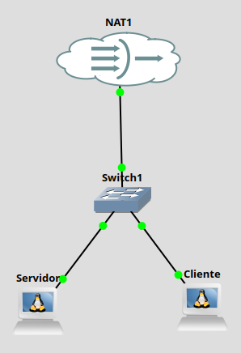

Práctica 5.1: Diagnóstico Local de Sockets y Conexiones de Red con ss y netstat
Datos de la Práctica
- Módulo: Seguridad y Alta Disponibilidad (SAD - 0378)
- Unidad Didáctica: UD5 - Seguridad Activa y Auditorías en Redes Corporativas
- Requisitos: Dos máquinas virtuales Linux (Debian o Ubuntu) interconectadas en red (vía GNS3, VirtualBox, KVM o AWS) con acceso a terminal y privilegios
sudo.
1. Objetivos de la Práctica
- Comprender la función del diagnóstico de sockets como técnica fundamental de auditoría local y detección de servicios no autorizados.
- Diferenciar la herramienta clásica
netstat(paquetenet-tools) de la utilidad modernass(Socket Statistics, paqueteiproute2). - Identificar y clasificar los estados principales de los sockets de red (
LISTEN,ESTABLISHED,TIME_WAIT). - Asociar puertos abiertos y conexiones activas con sus respectivos procesos propietarios y PIDs (
-p). - Auditar el impacto de la instalación de nuevos servicios de red (servidor SSH y servidor web Apache).
- Correlacionar de forma cruzada una sesión de comunicación cliente-servidor verificando la tupla de red en ambos extremos.
2. Introducción Teórica: Auditoría de Sockets y Puertos
En la administración de sistemas informáticos, un socket es el punto final de una comunicación bidireccional entre dos aplicaciones a través de la red. Viene definido por la tupla:
Socket = Dirección IP, Puerto transportador, Protocolo TCP/UDP
Cuando un servidor ofrece un servicio (por ejemplo, un servidor web o SSH), abre un socket en estado LISTEN (escucha) a la espera de peticiones entrantes. Cuando un cliente se conecta, el sistema operativo establece una conexión en estado ESTABLISHED, asignando en el cliente un puerto efímero de origen (puerto alto aleatorio, ej. 54321) y conectándolo al puerto bien conocido del servidor (ej. 80 o 22).
¿Por qué auditar los sockets del sistema?
Un administrador o auditor de seguridad utiliza estas herramientas para:
- Inventariar servicios expuestos: Verificar qué puertos están abiertos y si corresponden a servicios autorizados.
- Detectar conexiones no autorizadas: Identificar sesiones iniciadas hacia direcciones IP externas desconocidas o puertos inusuales.
- Analizar fallos de conectividad: Confirmar si un servicio se ha colgado o si está escuchando únicamente en la interfaz local (
127.0.0.1) en lugar de en la interfaz de red pública (0.0.0.0).
Comparativa: netstat vs ss
netstat(Network Statistics): Herramienta tradicional del paquetenet-tools. Lee la información analizando el sistema de archivos/proc/net/. En sistemas con miles de conexiones abiertas, resulta lenta y obsoleta.ss(Socket Statistics): Herramienta moderna del paqueteiproute2. Consulta directamente al kernel de Linux mediante el subsistema de socketsnetlink, siendo exponencialmente más rápida y precisa.
3. Desarrollo Paso a Paso de la Práctica
Escenario de Trabajo Requerido:
Para completar la práctica se requieren dos máquinas Linux (Debian o Ubuntu) conectadas a la misma red virtual. Nosotros usaremos el siguiente escenario en GNS3.

- Servidor: IP asignada por tu entorno GNS3.
- Cliente: IP asignada por tu entorno GNS3.
Recuerda que en GNS3 las máquinas Debian no tienen habilitada la interfaz de red. Habilítala en ambos equipos y cambia el Hostname de cada uno de ellos a Servidor y Cliente.
Tarea 1: Preparación del Entorno e Instalación de Utilidades
- Inicia sesión en la máquina que actuará como Servidor.
- Actualiza los repositorios e instala los paquetes necesarios (
net-tools,iproute2yopenssh-server): - Verifica que el servicio SSH está activo en el servidor:
Tarea 2: Inspección Inicial de Sockets en Escucha (LISTEN)
- Ejecuta el comando
sspara listar únicamente los sockets de transporte (TCP/UDP) que están en escucha, mostrando direcciones numéricas y los procesos propietarios: -
Desglose de opciones:
-t: Muestra sockets TCP.-u: Muestra sockets UDP.-l: Muestra únicamente sockets en estadoLISTEN(escucha).-p: Muestra el proceso (nombre y PID) propietario del socket.-n: Muestra direcciones y puertos numéricos (ej.22en lugar dessh).
-
Ejecuta la inspección equivalente utilizando el comando tradicional
netstat: -
Análisis Guiado:
- Localiza en la salida la línea correspondiente al servicio
sshd. - Anota la dirección IP de escucha asignada a SSH:
- Si aparece
0.0.0.0:22o:::22, significa que el servicio escucha en todas las interfaces de red del equipo. - Si apareciera
127.0.0.1:22, el servicio solo aceptaría conexiones locales desde la propia máquina. - Anota el PID (identificador de proceso) asociado a
sshd.
- Localiza en la salida la línea correspondiente al servicio
Tarea 3: Instalación y Detección de un Nuevo Servicio (Apache Web Server)
-
En la máquina Servidor, instala el servidor web Apache:
-
Una vez finalizada la instalación, vuelve a inspeccionar los sockets en escucha filtrando por el nombre del servicio:
-
Análisis Guiado:
- Comprueba que ha aparecido un nuevo socket TCP en escucha.
- Anota el número de puerto asociado a Apache (puerto 80 / HTTP).
- Observa cómo el sistema operativo ha asignado el puerto 80 al proceso
apache2automáticamente.
Tarea 4: Generación de Tráfico Web y Consulta de Conexiones Activas (ESTABLISHED)
-
Desde la máquina Cliente, realiza una petición HTTP al servidor web mediante
curlo abriendo el navegador hacia la IP del servidor desde la máquina HOST: -
De forma simultánea, en la máquina Servidor, consulta las conexiones que se encuentran en estado establecido (
(O bien medianteESTABLISHED):netstat:sudo netstat -tan | grep ESTABLISHED)
En este caso hemos usado -t (protocolos TCP), -a (Muestra todos los sockets TCP, combinando tanto los que están en estado de escucha (LISTEN) como aquellos en estados establecidos o de cierre (ESTABLISHED, TIME-WAIT, CLOSE-WAIT, SYN-SENT, etc.). Por defecto, si se omite -a, ss ignora los sockets en escucha y solo lista las conexiones activas) y -n (numeric, muestra direcciones IP)
- Análisis Guiado:
- Comprueba que la conexión HTTP es muy breve y pasa rápidamente a estado
TIME_WAITo se cierra, debido a la naturaleza sin conexión persistente del protocolo HTTP/1.1 por defecto. Probablemente pase tan rápido que no te de tiempo ni a capturarlo con el comando. - Vamos a lanzar el comando con
watchque nos permite lanzar el comando a intervalos regulares y capturar esos cambios El comandowatchlanzará cada 0.25 seg el comando que le sigue. Además, con -d nos mostrará en video inverso los camibios frente al comando anterior. - Lanza ahora conexiones desde el Cliente y el navegador del Host y comprueba el cambio en las conexiones.
- Comprueba que la conexión HTTP es muy breve y pasa rápidamente a estado
Tarea 5: Correlación Cruzada de una Sesión SSH Cliente-Servidor (Doble Terminal)
En esta tarea vas a verificar cómo se visualiza una misma conexión de red desde los dos extremos de la comunicación (Cliente y Servidor).
-
Vas a necesitar 2 ventanas de terminal simultáneas:
- Ventana 1 (Cliente): Consola abierta en la máquina cliente desde GNS3.
- Ventana 2 (Servidor): Consola abierta en la máquina cliente desde GNS3.
-
Ejecución en el CLIENTE (Ventana 1):
Lanza una conexión SSH desde el Cliente al Servidor. Conéctate y deja esa ventana abierta. Estarás trabajando en el servidor.
-
Ejecución en el SERVIDOR (Ventana 2):
Lanza una conexión SSH desde el Servidor al Cliente. Conéctate y deja esa ventana abierta. Estarás trabajando en el cliente.
- Dentro de la sesión SSH en el Cliente ejecuta el comando ss necesario para ver las conexiones e identifica las 2 conexiones ssh establecidas. Mira en cuál es cliente es el servidor
sshdy en cual el clientessh
- Dentro de la sesión SSH en el Cliente ejecuta el comando ss necesario para ver las conexiones e identifica las 2 conexiones ssh establecidas. Mira en cuál es cliente es el servidor
-
Ejecución en el CLIENTE (Ventana 1):
Realiza en la otra ventana las mismas operaciones. Identifica las 2 conexiones establecidas y comprueba cómo el que era servidor en la otra ventana es cliente en esta y viceversa.
-
Captura de Pantalla Obligatoria:
- Realiza una captura de pantalla donde se vean las dos terminales abiertas en paralelo en el mismo escritorio.
- Abre la imagen con un editor gráfico (Pinta, GIMP o la herramienta de recortes de tu SO) y resalta/marca con un recuadro de color distinto las dos líneas correspondientes a cada conexión SSH (demostrando que el puerto efímero del cliente coincide exactamente en ambas ejecuciones).
Tarea 6: Ampliación Opcional en Entornos Windows (netstat en CMD)
Si dispones de un equipo o máquina virtual con Windows:
1. Abre una consola de comandos (cmd.exe) o PowerShell como Administrador.
2. Consulta la ayuda de la herramienta netstat en Windows:
4. Cheatsheet Comparativo: ss vs netstat
Utiliza esta tabla de referencia rápida para tus tareas de administración de sistemas:
| Acción / Objetivo | Comando con ss (Moderno) |
Comando con netstat (Legacy) |
|---|---|---|
| Listar todos los puertos TCP/UDP en escucha con PID | ss -tulpn |
netstat -tulpn |
| Mostrar solo conexiones TCP establecidas | ss -tan state established |
netstat -tan \| grep ESTABLISHED |
| Filtrar por puerto de destino específico | ss -tan dport = :22 |
netstat -tan \| grep :22 |
| Mostrar estadísticas numéricas sin resolver nombres | ss -n |
netstat -n |
| Mostrar sockets en escucha del proceso Apache | ss -tulpn \| grep apache2 |
netstat -tulpn \| grep apache2 |
5. Entregable y Cuestiones de Autoevaluación
Requisitos de Entrega:
Elabora un informe en formato PDF que incluya:
- La captura de pantalla editada de la Tarea 5 (donde se aprecie claramente el escritorio con las dos terminales paralelas y las líneas SSH marcadas).
Cuestiones de Autoevaluación:
-
Interpretación de Direcciones de Escucha:
Si al ejecutar
ss -tulpnen un servidor observas que el servicio de base de datos MySQL/MariaDB escucha en127.0.0.1:3306, ¿podrá un cliente conectado desde otra máquina de la red de área local realizar consultas a la base de datos? ¿Qué dirección debería figurar en la escucha para permitir el acceso remoto? -
Puertos Efímeros:
¿Qué es un puerto efímero (ephemeral port)? ¿Quién lo asigna, en qué rango de puertos se suele situar y cuál es su función en una comunicación cliente-servidor?
-
Detección de Conexiones Anómalas:
Si sospechas que un servidor Linux ha sido comprometido por un proceso no autorizado que envía datos a un servidor remoto en Internet, ¿por qué el parámetro
-penss -tulpnonetstat -tulpnes crucial para la investigación del incidente? -
Rendimiento de Diagnóstico:
¿Por qué en servidores con un volumen de tráfico muy elevado (decenas de miles de sockets abiertos) se desaconseja el uso de
netstaty se exige utilizarss? Explica la diferencia en la fuente de datos que consulta cada comando dentro del sistema Linux.